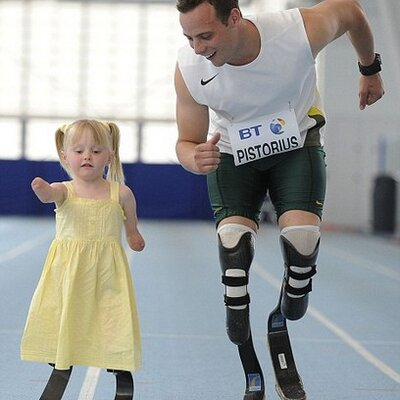

<section class="clear">
	<a align="left" href="http://github.com/kmcintyre"></a>
	Kevin McIntyre
	 	
</section>
<section>
	<h1>Laremy Tunsil?</h1>
</section>
<section>
	
</section>
<section class="clear">
	<h1>
	One bong hit potentially costs NFL draftee $8M
	<a href="http://www.cnbc.com/2016/04/29/one-bong-hit-costs-nfl-draftee-8m.html"></a>
	</h1>		
</section>
<section>
	<h1>Ways social media could be used to evaluate players.</h1>		
</section>
<section>
	<h3><a href="#" onclick="r1('KennyBritt_18', this.parentNode)">Identifying good/bad seeds.</a></h3>		
</section>
<section>
	<h3>* Social Media is inherently a selfish endeavor</h3>		
	<h3>Team kudos</h3>
	<h3>League callouts</h3>	
</section>
<section>
	<h3><a href="#" onclick="r1('KingTunsil78', this.parentNode)">Identifying good/bad brand ambassadors.</a></h3>
</section>
<section>
	<h3>Product Mentions</h3>		
	<h3>Product Pictures</h3>	
</section>
<section>
	<h3>Fan Amplifications</h3>
	<h3>Cross league awareness</h3>
</section>
<section>
	<h3><a href="#" onclick="$(this.parentNode).next().toggle()">Identifying psychological changes via usage patterns.</a></h3>
	<div style="padding:2px" style="display:none"><div style="padding-top:10px"><span style="display:inline-block;padding-right:10px"><b>3.5 years ago</b></span>It's drives me crazy when women take forever in the bathroom</div></div>
</section>
<script>
	function r1(who, where) {
		console.log(who, where)
		$.ajax({datatype:'json', url: who + '.json'}).done(function(data) {			
			if ( $(where).next('div').length == 0 ) {
				var div = '<div style="padding:2px" id="' + who + '"></div>';
				$(where).after(div);
				data.forEach(function (tweet) {
					if ( tweet.tweet_txt ) {
						
						var yo = prettyDate(tweet.social_ts_received)
						console.log(yo)
						$('#' + who).append('<div style="padding-top:10px"><span style="display:inline-block;padding-right:10px"><b>' + yo + '</b></span>' + tweet.tweet_txt + '</div>');
					}
				})				
			} else {
				$(where).next('div').remove()
			}
		});
	}
</script>